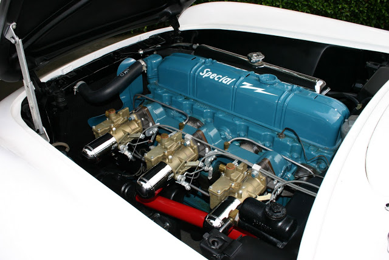
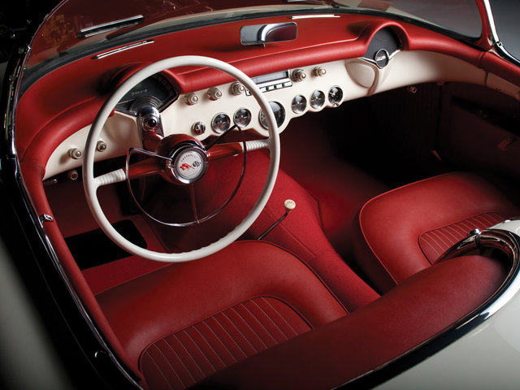
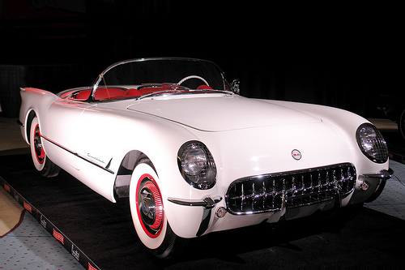

Learn More
The sensation of the shows, rakish, fast, smart. In white and scarlet, 33 inches high at door, air-fin fenders, jet type tail lights; the newest of the new - a glass fiber body; power glide, high compression 160 horsepower motor.
Engine Specifications
Featuring 0-60 m.p.h. in 11.0 seconds, the engine has 150 h.p. at 4200 r.p.m, and a torque of 223 Nm at 2400 r.p.m.
Interior Specifications
The astonishing interior has the seats made of scarlet leather, the panel is a mix of white and scarlet with chromed details.
Body Specifications
The body is made of glass fiber, with a beautiful convertible black canvas top, with only 51.3 inches tall and 167 inches long.